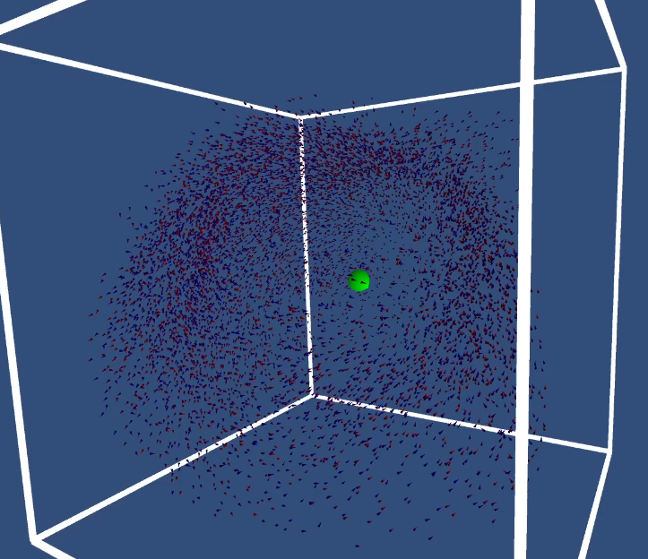

GPU BOIDs
-
Tens of Thousands of BOIDs
In order to get more familiar with Compute Shaders in Unity, I made a BOID simulation using the many threads of a Compute Shader in Unity. BOIDs are agents with flocking behavior and can appear like a swarm of fish or birds. By leveraging the power of the GPU about I could simulate about 32 thousand BOIDs in Unity with decent performance.
-
BOIDs
The BOIDs work by following a few simple rules. They avoid nearby BOIDs, move toward the center of the flock, and try to match velocities with other nearby BOIDs. I included a box to act as bounds that they would avoid and get teleported to the other side should they cross it.
-
BOID Castes
I made a special BOID that was marked so that it would behave differently and the others would treat it differently. My idea was a “Smelly BOID” that the others would avoid much more strongly, but it would feel lonely and muscle to the swarm's center. To make it more distinguished, I made it huge and green with the old high-poly mesh. Thanks to some optimizations I made, I was also able to have twice as many BOIDs.

-
Optimization
In my second simulation, I made some changes so they would run a little quicker, short-circuiting and avoiding costly square roots whenever possible. The mesh was reduced to a triangular pyramid, substantially reducing the number of triangles. I also got rid of the teleporting to the other side because that was upsetting the swarm in a weird and seemingly unnatural way.